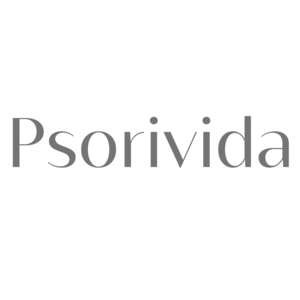

Trade Mark Journal No.2025/041 10 October 2025
UK00004270918 29 September 2025 (3,5)

- Class 3
- Cosmetics and cosmetic preparations; Cosmetic creams; Make-up; Beauty masks; Sun protecting creams [cosmetics]; Cosmetic preparations for slimming purposes; Cosmetic preparations for baths; Sun blocking preparations [cosmetics]; Cosmetic creams and lotions; Cosmetic body scrubs; Acne cleansers, cosmetic; Serums for cosmetic purposes; Toners for cosmetic purposes; Gels for cosmetic use; Oils for cosmetic purposes; Ointments for cosmetic use; Non-medicated cosmetics and toiletry preparations; Cosmetic nail care preparations; Lip protectors [cosmetic]; Collagen preparations for cosmetic purposes; Cosmetic sun-protecting preparations; Bath oils for cosmetic purposes; After-sun preparations for cosmetic use; Cosmetic preparations for the hair and scalp; Mineral water sprays for cosmetic purposes; Moist wipes for sanitary and cosmetic purposes; Cosmetic preparations for the care of mouth and teeth; Lip balms [non-medicated]; Balms, other than for medical purposes; Soaps and gels; Shampoos; Hair tonic; Hair nourishers; Hair preparations and treatments; Hair treatment preparations; Sunscreen sticks; Lipsticks; Lip glosses; Non-medicated lip care preparations; Body emulsions; Moisturising creams, lotions and gels.
- Class 5
- Dietary supplements and dietetic preparations; Dietary supplements with a cosmetic effect; Medicated lip balm; Antibacterial soap; Medicated hair care preparations; Prebiotic supplements; Herbal supplements; Mineral dietary supplements; Nutraceuticals for use as a dietary supplement; Health food supplements made principally of vitamins; Fitness and endurance supplements; Health food supplements for persons with special dietary requirements; Vitamin and mineral preparations; Pharmaceuticals; Dietetic substances adapted for medical use; Food supplements; Dietetic foods adapted for medical purposes; Dietary and nutritional preparations; Dietary supplemental drinks; Meal replacement powders; Nutritional drink mix for use as a meal replacement; Vitamin drinks; Medicated shampoos; Medicated soap; Moisturising body lotion [pharmaceutical]; Medicinal ointments; Medicated lotions for the hands; Foot balms (Medicated -); Medicated lotions; Creams (Medicated -) for the lips; Skin care creams for medical use; Medicated creams for the care of the feet; Creams for dermatological use; Protective creams (Medicated -); Hand creams for medical use; Creams (Medicated -) for application after exposure to the sun; Medicated creams; Corn and callus creams; Anti-fungal dermatological preparations for use on the nails; Nail care preparations for medical use.
"PHARMENA" SPÓŁKA AKCYJNA
Representative: Stevens Hewlett & Perkins